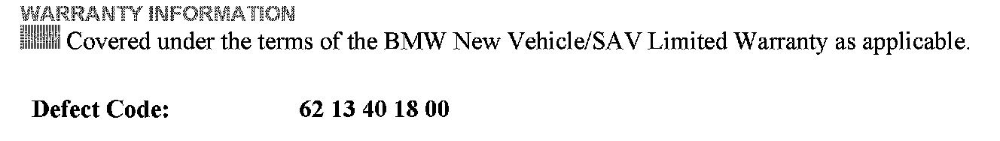
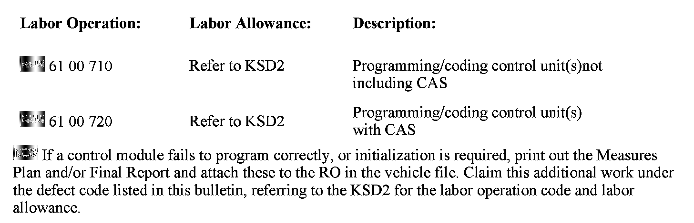

Engine Controls - Erroneous CBS4 Oil Service Forecast
SI B12 06 08Engine Electrical Systems
February 2011
Technical Service
This Service Information bulletin supersedes SI B12 06 08 dated July 2008.
[NEW] designates changes to this revision
SUBJECT
CBS4 Oil Service Forecast Displays Due in 25,000 miles
MODEL
E82, E88, E90, E91, E92 and E93 with the N51, N52K and N54 engines produced up to 3/08
E70 with the N52K and N62TU engines produced up to 3/08
SITUATION
The forecasted mileage until the next CBS oil service erroneously displays as due in 25,000 miles after a CBS reset.
The engine oil service interval is "flexible", depending on a learned driver profile (average fuel consumption).
When the CBS oil service is reset, the mileage forecast until the next oil service is calculated based upon this current average fuel consumption value or driver profile.
The highest oil service mileage forecast which could be displayed (vehicles achieving less than average fuel consumption) is 19,000 miles.
CAUSE
DME software calculation error
CORRECTION
Only after confirming the customer complaint, reprogram the vehicle using the latest version of ISTA/P to the appropriate integration level listed below.
For E8x and E9x (3 Series) with the N51 and N52K engines, the updated DME software is included with integration level E89X-08-03-510 or higher.
For E8x, E9x (3 Series) with N54 engines, the updated DME software is included with integration level E89X-08-03-520 or higher.
For E70 (X5) vehicles, the updated software is included with integration level E070-08-03-510 or higher.


[NEW] WARRANTY INFORMATION